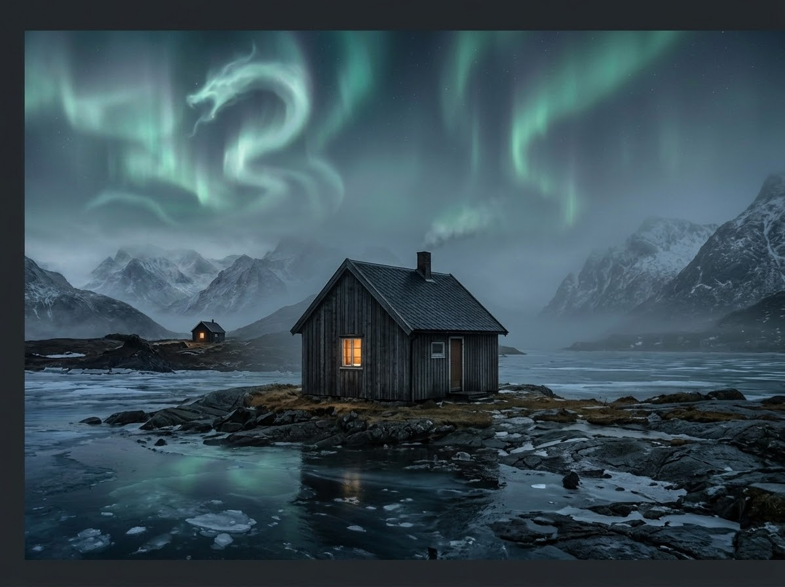
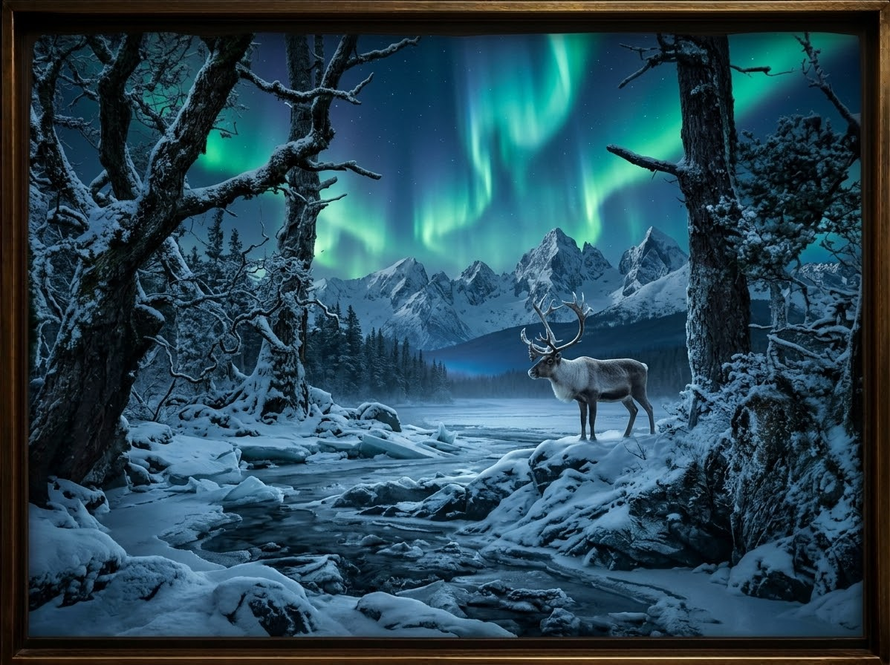
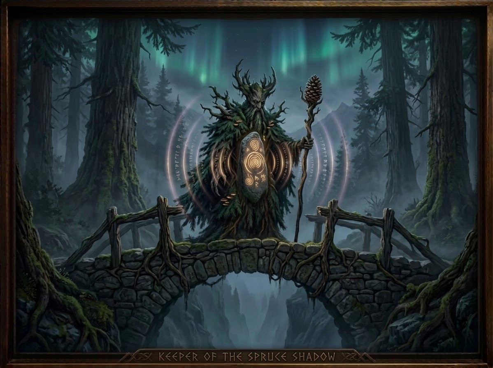

Визуальное исследование · Северный край
Там, где
помнит земля
Карта историй, которые живут между лесом, водой и небом. Выберите знак на карте — и откройте одну из легенд.
Исследовать карту
ЖИВОЙ СЕВЕРТам, где небо касается земли
✳
01 / Пространство историй
Карта памяти
Нажмите на светящийся знак, чтобы услышать историю места.
ВЕРХНИЙ МИРРЕКА ПАМЯТИЛЕС ТЕНЕЙ
✳С
Между землёй и небом
Север дышит
своими историями
Ветер меняет очертания облаков, вода хранит отражения, а лес бережёт тишину.
02 / Три пространства
Миры Севера

03 / Идея проекта
Не найти точку на карте.
Почувствовать её историю.
Атлас приглашает замедлиться и увидеть север как пространство живой памяти. Каждая метка — начало небольшого путешествия.
О проекте